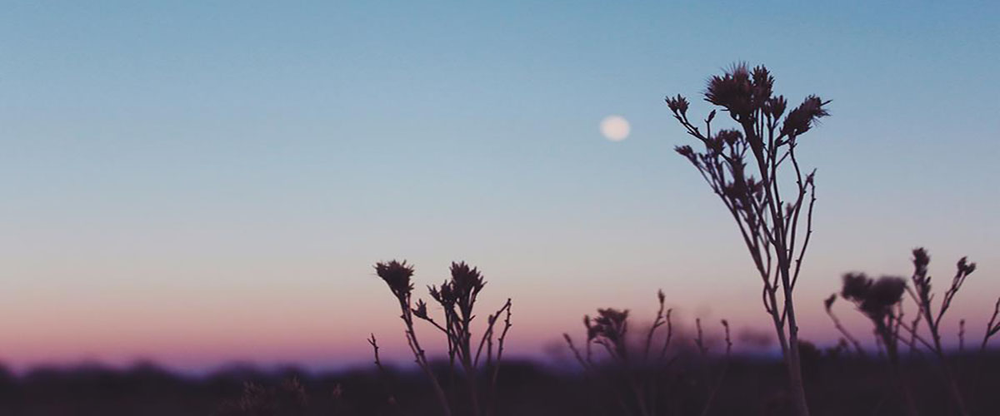
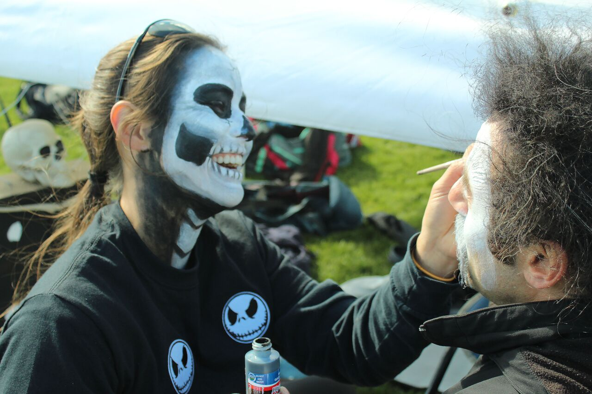

Photo
These are some photos of my experiences near and far. I try and see beauty in everyday things. I have been taking photos for about six years now, and now it is almost to not see inspiration everywhere I go!

A girl paints her teammates face during the Fright Flight Ultimate Frisbee Tournament in Fort Collins.
A puppy chills by a mug of beer during a "puppy yoga event" held at Prost Brewing in Fort Collins.
Old Town Fort Collins is a photo perfect place for everyone to enjoy themselves, especially during summer.
Hoursetooth Reservoir has become a favorite place of mine to explore.
The Lantern Festival made a stop in Denver, CO and was a gorgeous sight!
I grew 20 minutes away from the Great Sand Dunes National Park and it is awe-inspiring each time I go back
 I took the trip of a lifetime to Costa Rica where I learned so much about myself and the beautiful culture surrounding me.
I took the trip of a lifetime to Costa Rica where I learned so much about myself and the beautiful culture surrounding me.
A hobby of mine is taking my friend's senior portraits. Shooting people is the most rewarding photographic experience.